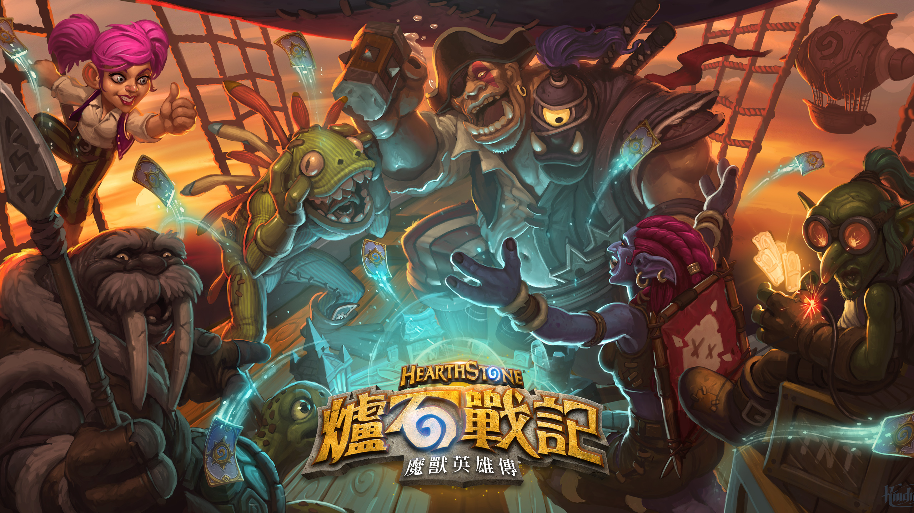
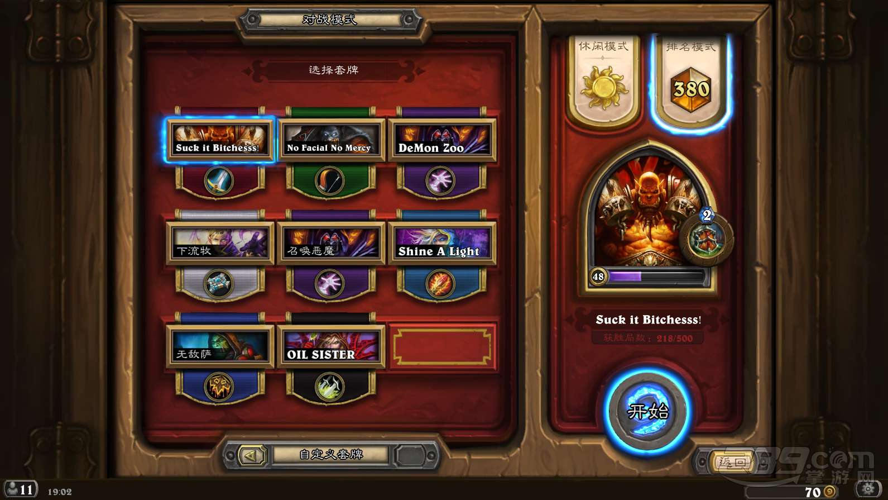
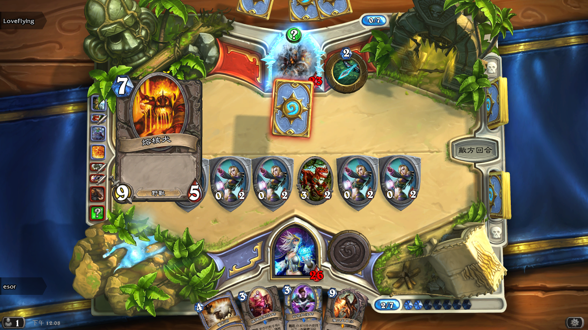
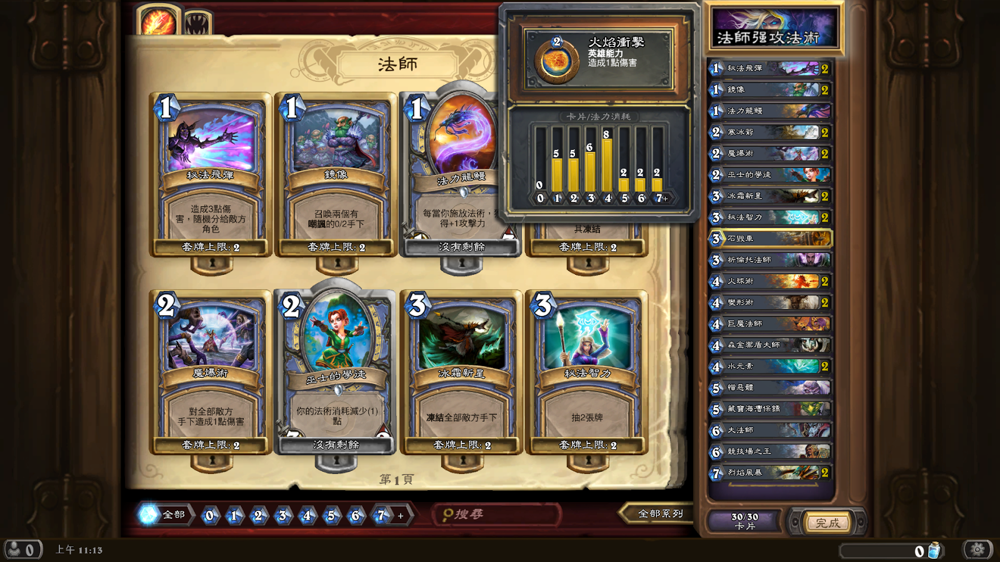
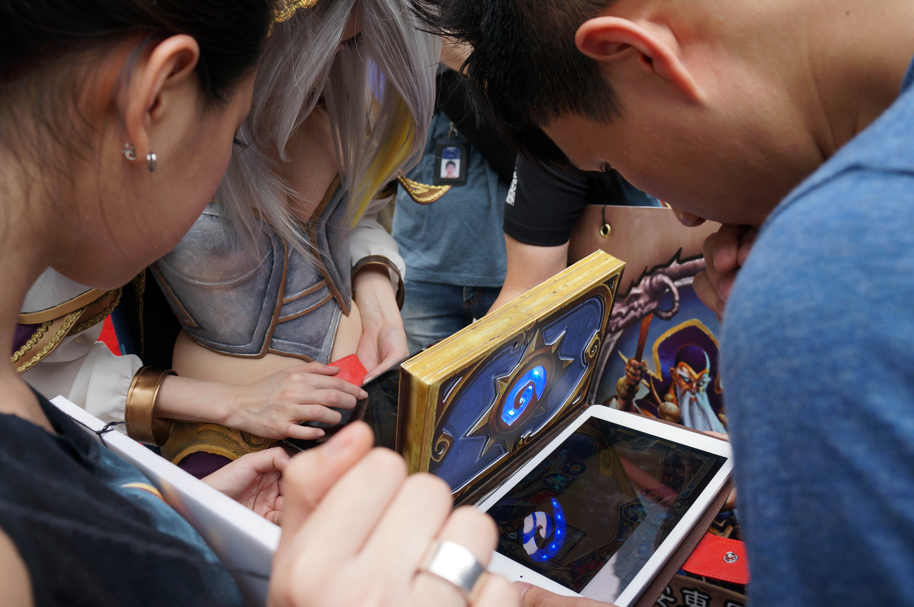

《爐石戰記》(HEARTHSTONE)
《爐石戰記》(HEARTHSTONE)

遊戲介紹

《爐石戰記：魔獸英雄傳》（英語：Hearthstone: Heroes of Warcraft，中國大陸譯作「爐石傳說」）是暴雪娛樂一款開發中的集換式卡片遊戲。由暴雪員工Rob Pardo在2013年3月的PAX 2013公布。遊戲在2013年夏進入Beta測試。2014年1月24日進入公測階段。2014年3月13日，歐、亞、美三個伺服器正式營運，「中國」伺服器也於3月15日正式營運。
該遊戲是一款免費遊戲，故事背景基於魔獸系列的世界觀，玩家可以另行購買卡牌包。遊戲將首先在PC與蘋果電腦平台發售，已推出iOS和Android手機及平板電腦版本，並且可能在發布之後延伸到其他平台。遊戲發布時將會包含300張卡片，額外卡牌包可透過遊戲內獲取，或者以每包1美元的價格購買。每一個卡牌包內有五張隨機卡片，包括至少一張「精良卡片」。玩家可以選擇九種職業「英雄」作為主角，類似魔獸世界中的職業。遊戲透過暴雪的Battle.net進行，比賽模式基於傳統的1v1方式。目前為止暫無玩家間交易卡牌的計劃。
基本規則

《每一場「爐石戰記」都是1vs1模式，採取輪流回合制。正常情況下玩家在輪到他的回合會抽一張卡片，並且根據手上的牌來決定要召喚手下（中國譯作「隨從」）、裝備武器或者是施放法術等行為來應戰。一場遊戲可能會有兩名玩家，抑或是一名玩家一名電腦，又或者是兩名玩家和一名電腦。
每名玩家都會選擇一名英雄在一場遊戲中代表他們，而這些英雄都是魔獸世界中的重要角色。不同的英雄會代表不同的職業，同時這些職業會擁有專屬於該職業的特殊套牌以及各具特色的英雄能力。每場遊戲的英雄都擁有三十點生命值；一旦玩家的英雄生命值歸零或變成負值，或此玩家選擇投降，就代表這名玩家輸了這場遊戲。目前，爐石戰記總共擁有九個職業。
在每個回合的開始，玩家將會從他們的牌庫（deck）中抽一張卡，而這些牌庫必須在開始遊戲前就建構好並且恰好三十張。玩家可以選擇使用預設的牌庫或者自訂牌庫來進行遊戲。當玩家擁有大量該職業的特殊卡牌時，將更能夠體認到遊戲中各職業的獨特魅力以及可能性。
在輪到該玩家的回合時，玩家將可以選擇要打出卡牌、使用英雄能力、命令手下攻擊，或者當他的英雄有裝備武器時，也可以讓英雄自己進行攻擊；當然，也可以什麼都不做便結束回合。然而，基本上若要出牌或者使用英雄能力，必須花費一定的等同於該張牌左上角數字的法力水晶。在遊戲的一開始雙方玩家都會擁有一顆法力水晶，並且接下來逐回合增加一顆，直到十顆。通常耗費較多法力水晶的牌也會擁有較強大的力量，例如較強壯的手下或者是較高傷害的法術牌。
當其中一名玩家輸掉的時候（有時雙方會平局），就代表該局遊戲結束了。一局遊戲結束將會讓雙方都獲得經驗值（獲勝方會獲得較多），並且在提升至某些等級時將會獲得一些基本牌（等級超過40級後獲得基本牌金卡）作為獎勵。
每場戰鬥都將在一個隨機的牌桌背景上進行，這些背景取材於魔獸世界中的著名場景，諸如：荊棘谷、潘達利亞、暴風城、納克薩瑪斯、黑石山以及銀白聯賽等。玩家也可以在遊戲中藉由點擊特定與牌桌四周的景物互動（手機版只有兩個）。
卡牌介紹

在除了「競技場」以外的所有模式中，玩家會使用一套套牌共30張卡片來進行一場戰鬥，而這些卡片全都需要玩家自行去收集。每套套牌中，同名的牌只能放入2張，而同名的傳說級卡片只能放入1張。競技場模式則沒有相關限制，但相對的玩家必須重新從系統所隨機給予的職業和卡牌選項中選擇，建構出一套新的套牌。相同點是，無論是怎樣的套牌，它們都將會是進行一場遊戲的關鍵要素，其中的每一張牌都可能在遊戲中派上用場。
基本卡牌：中立的基本級卡牌可以在遊戲開始時解鎖，各個職業的基本級卡牌可以在解鎖該職業時解鎖10張，當該職業升至10級時可以解鎖完剩下的10張。金色的基本級卡牌可以在職業升級時獲得。
專家卡牌：玩家可以透過打開擴展包、競技模式、合成模式、冒險模式或一些隱藏任務獲得專家級卡牌。專家級卡牌分為白色（普通）、藍色（精良）（大陸譯作「稀有」）、紫色（史詩）、橙色（傳說）四個級別。一個擴展包里有5張專家級卡牌，並且至少有一張為精良或者更優質的卡牌。新的卡牌意味著玩家將會有更多選擇來建構他們的套牌，並且更有策略性。
金卡：類似於許多卡片收集遊戲，爐石戰記也有所謂的「金卡」，一種功能上與普通卡片無異的特殊卡片。金卡擁有獨特的金色邊框、精緻的牌面動畫以及分解時較高的魔塵量。金卡不僅僅可以用來裝飾，某種意義上也可以顯示玩家於遊戲中的成就。
遊戲發展

在最初，遊戲便被設計為僅能在線上遊玩。遊戲畫面開始於玩家開啟一個盒子。在遊戲中，玩家手中的卡牌會顫抖並且移動，而且當它們被打出時會有近於灌籃的震動效果。當攻擊的時候，作為手下的卡牌會向目標衝擊；若是大規模破壞法術，則會震動整個牌桌；當召喚出一隻極其強大的手下時，也會出現一名看不見的觀眾於一旁驚嘆。「爐石戰記」同樣也有互動白板（interactive board），於其上卡牌可以各種方式展示或遊玩，而且基本上屬於純娛樂性質，對遊戲本身沒有任何影響。
「爐石戰記」是一個免費遊戲，其營收來自於玩家對於卡牌包與競技場入場資格的購買。此外，異於其他卡牌遊戲，爐石戰記並沒有卡片交易系統，取而代之的是遊戲讓玩家使用一種被稱為「魔塵」的東西來合成自己想要的卡片。
Blizzard也曾經實驗實行跨平台遊戲，並且成功讓一名使用桌上型電腦的玩家和一名使用iPad的玩家對戰；然而，這並不是最初便有的功能。這個功能在2014年四月被加入遊戲。開發者同時也表示他們正在努力開發「冒險模式」，一個新的單人遊玩模式，在其中玩家的目標是擊敗所謂的「頭目」。冒險模式將會提供新的卡片作為獎勵，每場冒險將會增加20至30張卡片於遊戲中。在未來，遊戲公司也計畫加入資料片，包括一百到兩百張的新卡片。
「爐石戰記」目前在四個地理區域提供遊戲：美洲、歐洲、亞洲以及中國。玩家只能與同地區的玩家對戰和交流。雖然說每個玩家大致上會因為其居住地而默認分配到所屬的遊戲地區，但是玩家仍然可以在Battle.net用戶端上切換遊戲地區來到其它地區玩遊戲；不過例外的是目前其它地區的玩家無法到中國地區遊玩。然而，玩家在每個地區的遊戲資料會是分開的，而且無法在不同地區間交換卡片、金錢或好友。